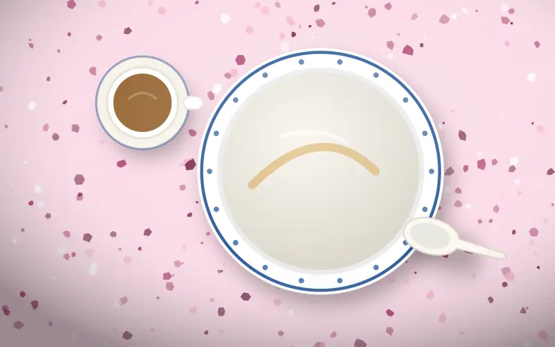
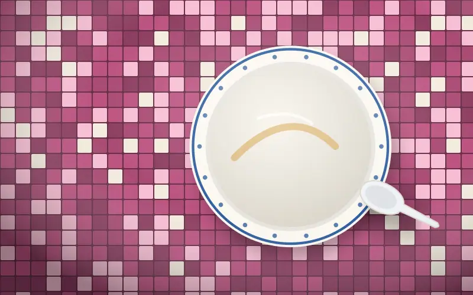
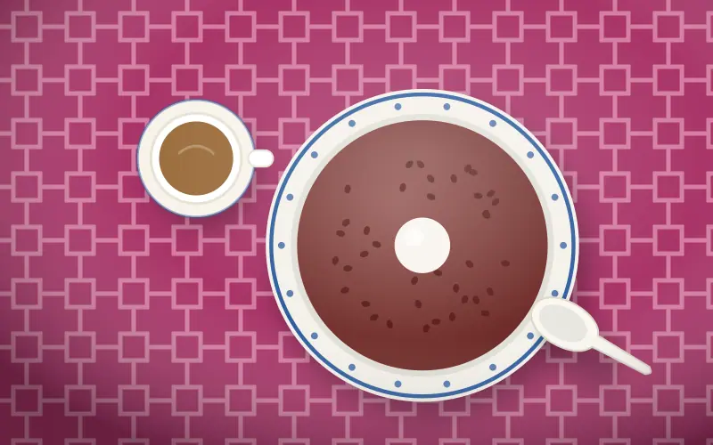

Cheap desserts in Hong Kong 甜品
16 places, from HK$14, ranked by Value Score.
 Kung Wo Beancurd Factory公和荳品廠 · Sham Shui Po$26
Kung Wo Beancurd Factory公和荳品廠 · Sham Shui Po$26  Kwan Kee Store坤記糕品 · Sham Shui Po~$14
Kwan Kee Store坤記糕品 · Sham Shui Po~$14 Kai Kai Dessert佳佳甜品 · Jordan$32
Kai Kai Dessert佳佳甜品 · Jordan$32  Kung Lee Sugar Cane Juice公利真料竹蔗水 · Central~$22
Kung Lee Sugar Cane Juice公利真料竹蔗水 · Central~$22 Auntie Yi Tofu Pudding依姐豆腐花 · Lamma Island~$15
Auntie Yi Tofu Pudding依姐豆腐花 · Lamma Island~$15 Yuen Kee Dessert源記甜品 · Sai Ying Pun~$30
Yuen Kee Dessert源記甜品 · Sai Ying Pun~$30 Ah Po Tofu Fa亞婆豆腐花 · Tai Po~$16
Ah Po Tofu Fa亞婆豆腐花 · Tai Po~$16 Yee Shun Milk Company義順牛奶公司 · Causeway Bay$42
Yee Shun Milk Company義順牛奶公司 · Causeway Bay$42 
Yee Shun Milk Company (Jordan)義順牛奶公司（佐敦） · Jordan$46 Meet Fresh (Causeway Bay)鮮芋仙（銅鑼灣） · Causeway Bay$42
Meet Fresh (Causeway Bay)鮮芋仙（銅鑼灣） · Causeway Bay$42  Meet Fresh (Tsuen Wan)鮮芋仙（荃灣） · Tsuen Wan$45
Meet Fresh (Tsuen Wan)鮮芋仙（荃灣） · Tsuen Wan$45  Honeymoon Dessert (Tsing Yi)滿記甜品（青衣） · Tsing Yi$52
Honeymoon Dessert (Tsing Yi)滿記甜品（青衣） · Tsing Yi$52  Honeymoon Dessert (Mong Kok)滿記甜品（旺角） · Mong Kok$58
Honeymoon Dessert (Mong Kok)滿記甜品（旺角） · Mong Kok$58 
Honeymoon Dessert (Sha Tin)滿記甜品（沙田） · Sha Tin$58 Honeymoon Dessert (Sai Kung)滿記甜品（西貢） · Sai Kung$58
Honeymoon Dessert (Sai Kung)滿記甜品（西貢） · Sai Kung$58 
Sweet Dynasty糖朝 · Tsim Sha Tsui$62More guides
Best meals under HK$50Cheap eats under HK$30Best value for moneyLate-night cheap eatsHidden gemsCheap breakfast in Hong KongRoast Meats 燒味Cha Chaan Teng 茶餐廳Dim Sum 點心Noodles 粉麵Congee 粥品Claypot 煲仔Cantonese 粵菜Seafood 海鮮Desserts 甜品Bakery 餅店Street Snacks 小食Vegetarian 素食HK Fast Food 快餐Rice Noodles 米線Thai 泰國菜Curry 咖喱Japanese 日式Vietnamese 越南菜Taiwanese 台灣菜Shanghainese 上海菜Dumplings & Northern 北方菜HK-style Western 港式西餐